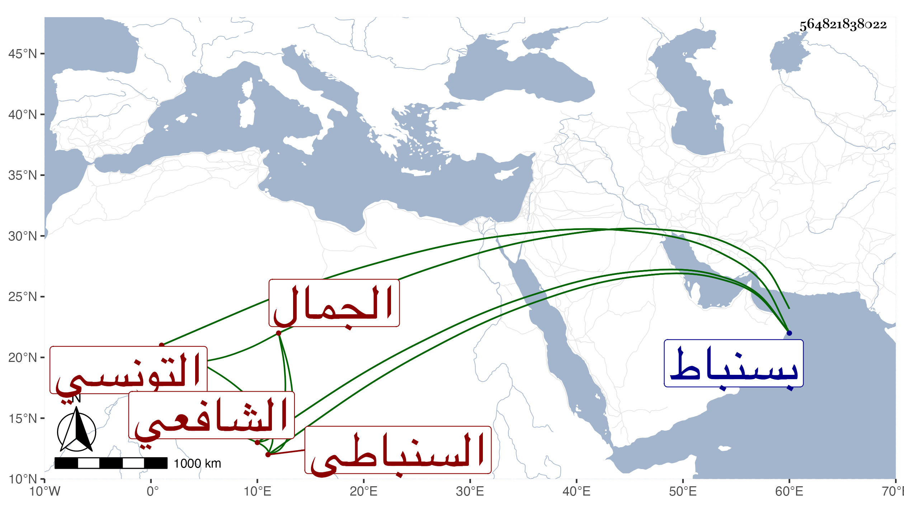

0902Sakhawi.DawLamic.ITO20230111-ara1.EIS1600.564821838022
Biography ID: 564821838022
1209
يوسف بن عبد الغفار بن وجيه بن عبد الوهاب بن محمد بن عبد الصمد ابن عبد النور الجمال التونسي الأصل السنباطي الشافعي والد العز عبد العزيز الماضي . قال لي ولده أنه ولد في سنة ست وثلاثين وسبعمائة بسنباط وأنه حفظ القرآن والشاطبية والمنهاج الفرعي والأصلي وعرضها على جماعة واستمر يكرر عليها حتى مات واشتغل بالعلم ورافق الشمس البوصيري ورأيت وصف البوصيري له في عرض ولده بالشيخ الإمام العالم العلامة ، وكذا رافق الشيخ عمر بن الشيخ فتح بل من شيوخه الأسنوي لازمه وكتب عنه شرحه على المنهاج الأصلي والقطعة وحضر دروس الأبناسي والبلقيني وبرع في العلم خصوصا علم الإكحال وكان يستحضر المفردات لابن البيطار ، وتكسب في بلده بالشهادة وقصد فيها بالفتاوى وربما أخذ الأجرة عليها ، وكان كثير التلاوة بل مكث نحو أربعين سنة سوى ما تخللها من سفر ونحوه يتلو كل يوم ختمة يختمها عند قبر والده . ومات في ثامن عشر ربيع الثاني سنة خمس عشرة بسنباط رحمه الله وإيانا .
